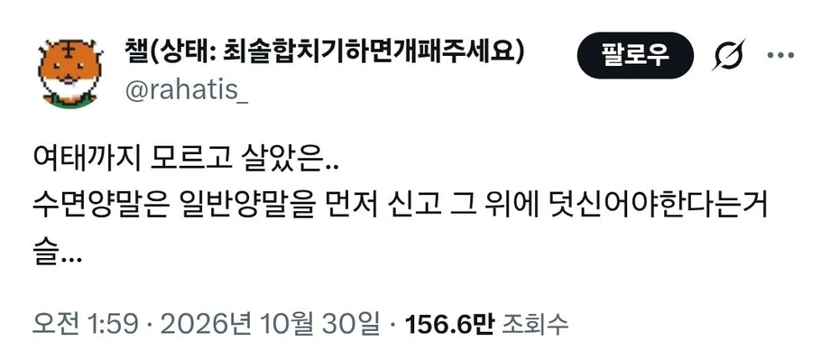
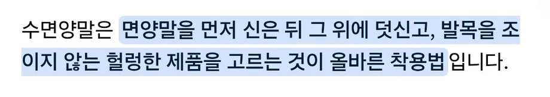
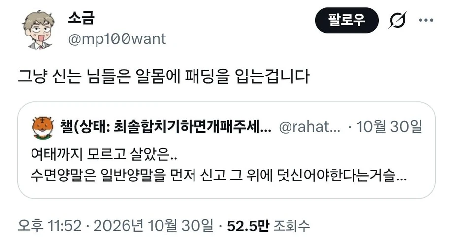
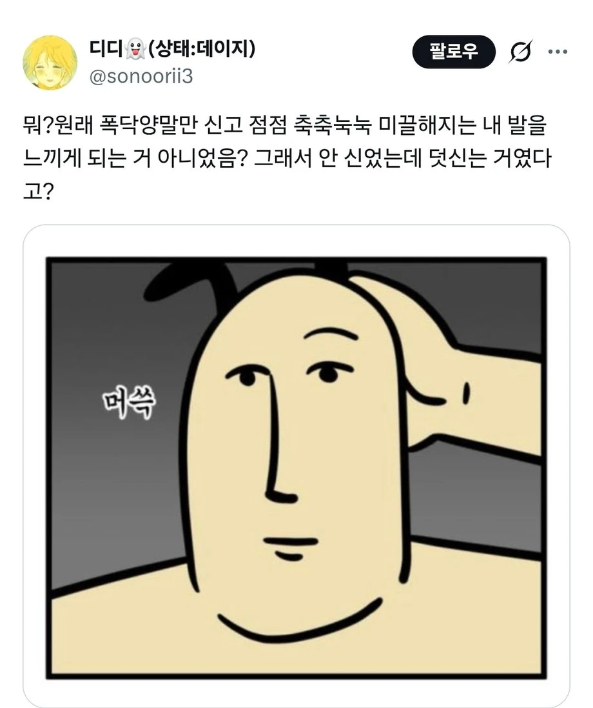
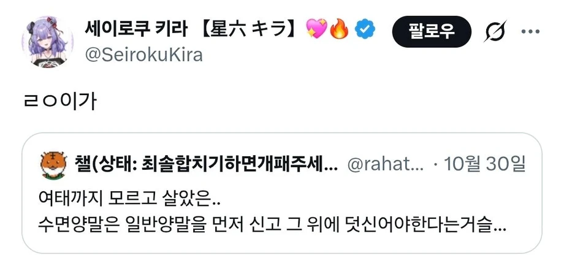
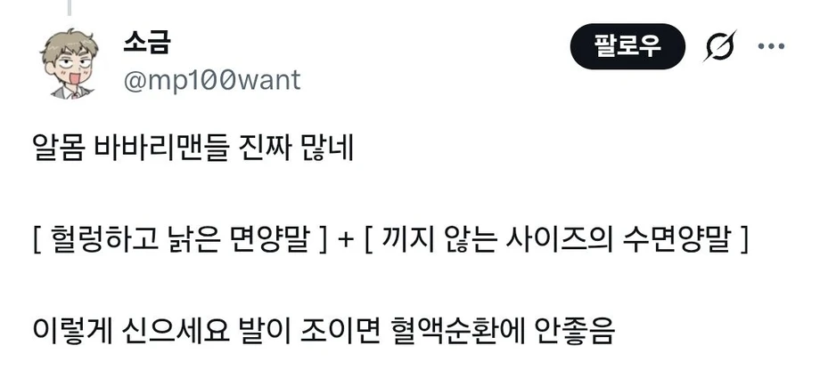

난 수면양말 수면잠옷의 '수면' 이 재질을 나타내는 것이라는 것도 얼마전에 첨 알았어. 수면을 도와주는거라 수면잠옷인 줄 알았지..
??!!
오 처음알았어..라고 생각했는데 방금전에 찾아보니 영어로도 슬리핑 삭스가 있는거 보면 수면(睡眠)이 맞나봐. 사전에서도 저렇게 되어있고
나도 그래서 당연 그런건줄 알았는데 우리나라에선 업계에서나 사용자나 모두 재질을 의미하는 거더라고..
다시 찾아보니 최근자가 있네.
일각에서 "수면은 잠이 아니라 원단 이름(직조 방식을 뜻하는 수면)이다"라는 속설이나 루머가 돌기도 했으나, 이는 사실이 아니며 잠을 잘 때 입는 옷과 용품에서 유래한 표현입니다.
• 국립국어원에서는 '수면 바지'를 *"잠을 잘 때 추위로부터 몸을 보호하기 위해 입고 자는 도톰한 바지"*로 규정하고 있습니다.
이렇대. 시발 내 억울함 풀렸네. 몇년전에 이걸로 내기했는데, 파는사람도 수면이 면의 종류다 이래놔서 시발 내가 졌다고...
파는 사람이 그런 의미로 쓴거라면 어쩔 수 없긴 하네 ㅋㅋㅋ
어쩐지 발냄새 오지게 나더라


뭣! 수면양말을 신는다고?
집에선 알몸이 국룰이 아니었다고?
개소리임